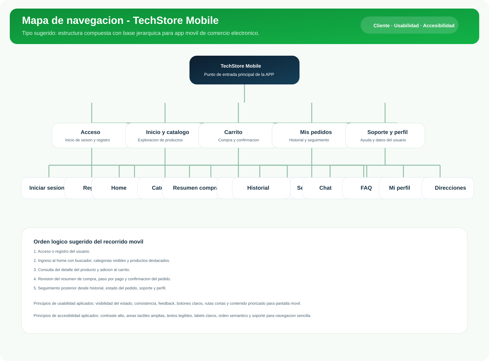

1. Introduccion
Esta evidencia presenta el diseno de una aplicacion movil para TechStore, una tienda de tecnologia enfocada en la consulta de productos, compra en linea y seguimiento de pedidos. El trabajo integra dos evidencias en una sola entrega: el mapa de navegacion movil con enfoque en usabilidad y accesibilidad, y la maquetacion de las pantallas principales en XML para Android.
El objetivo es que la estructura de la APP sea clara para el usuario, facil de recorrer desde dispositivos
moviles y coherente con una futura implementacion en Android Studio.
2. Objetivos
Objetivo general
Disenar la interfaz grafica y el mapa de navegacion de una app movil para TechStore, aplicando reglas de usabilidad, accesibilidad y responsive, y trasladando las pantallas principales a maquetas XML para Android.
Objetivos especificos
- Definir el orden logico de la informacion en una estructura movil.
- Construir un arbol jerarquico entendible para el recorrido del usuario.
- Seleccionar componentes Android adecuados para cada pantalla.
- Maquetar en XML las pantallas de inicio de sesion, registro y home/catalogo.
3. Requerimientos del cliente y alcance movil
Acceso rapido
El usuario debe poder iniciar sesion, registrarse y recuperar acceso sin fricciones.
Catalogo visible
El home debe priorizar busqueda, categorias y productos destacados desde la primera vista.
Compra acompanada
La APP debe permitir revisar carrito, pedidos, historial y soporte desde rutas cortas.
4. Usabilidad y accesibilidad aplicadas
| Criterio | Aplicacion en TechStore Mobile |
|---|---|
| Jerarquia visual | Se prioriza primero el acceso, luego el home y despues las acciones secundarias como pedidos, soporte y perfil. |
| Consistencia | Botones, campos, colores y espaciados se mantienen iguales en login, registro y home. |
| Feedback | Los botones principales se diferencian visualmente y los estados de avance se concentran en flujos cortos. |
| Legibilidad | Se propone texto de minimo 14sp, alto contraste y bloques con suficiente separacion para lectura movil. |
| Accesibilidad tactil | Se contemplan areas tactiles amplias, componentes visibles y campos con labels descriptivos. |
| Navegacion intuitiva | El usuario puede regresar, cambiar entre secciones principales y llegar al objetivo en pocos toques. |
5. Resoluciones y enfoque responsive
Resoluciones de referencia
- 360 x 640 px como base de diseno movil.
- 390 x 844 px para validacion en pantallas actuales.
- 412 x 915 px para revisar escalado y espaciados.
Criterios de adaptacion
- Uso de ScrollView para formularios largos.
- Uso de margenes y paddings fluidos.
- Jerarquia vertical para pantallas de una mano.
- Reutilizacion de estilos y componentes en XML.
6. Tipo de mapa de navegacion
Para esta APP se propone una estructura compuesta con base jerarquica. La raiz del sistema es TechStore Mobile; desde alli nacen rutas principales como acceso, inicio/catalogo, carrito, pedidos, soporte y perfil. Cada una se despliega a secciones secundarias y de detalle, lo que permite representar con claridad la arquitectura del contenido y el recorrido del usuario.

7. Orden logico de la informacion
- Ingreso del usuario mediante inicio de sesion, registro o recuperacion de acceso.
- Acceso al home con saludo, buscador, categorias principales y productos destacados.
- Consulta del detalle del producto y adicion al carrito.
- Revision del flujo de compra: carrito, pago y confirmacion.
- Seguimiento posterior desde historial de pedidos, soporte y perfil.
8. Componentes por pantalla
| Pantalla | Layout principal | Componentes propuestos |
|---|---|---|
| Login | ScrollView + LinearLayout | Logo, titulo, 2 EditText, boton principal, boton secundario y enlaces de apoyo. |
| Registro | ScrollView + LinearLayout | Logo, 5 EditText, CheckBox de terminos, CTA principal y acceso al login. |
| Home/Catalogo | ScrollView + LinearLayout | Header, buscador, chips de categorias, banner promocional, cards de productos y barra inferior visual. |
9. Plantillas y estilos base
Color
Se usa una paleta verde oscuro, verde vivo, blanco y grises tecnicos para reforzar identidad visual y contraste.
Tipografia
Titulos fuertes, subtitulos de apoyo y textos breves para formularios y tarjetas de producto.
Componentes
Botones redondeados, campos con bordes suaves, chips para categorias y contenedores con radios amplios.
10. Herramienta de trabajo: Android Studio
Para la evidencia EV08 se adopta Android Studio como herramienta principal de maquetacion, tomando como referencia la documentacion oficial: https://developer.android.com/studio. Las funciones mas utiles para esta entrega son:
- Project View para navegar entre app > src > main > res > layout.
- Editor XML para construir pantallas con control preciso de componentes.
- Preview / Design / Split para revisar la interfaz mientras se desarrolla.
- Panel de atributos para ajustar tamanos, colores, paddings y textos.
- Simulador o preview de dispositivo para validar la experiencia movil.
11. Pasos sugeridos en Android Studio
- Instalar Android Studio desde la pagina oficial.
- Crear un nuevo proyecto.
- Seleccionar una actividad vacia (Empty Views Activity).
- Ir a app > src > main > res > layout.
- Reemplazar o crear los archivos XML de login, registro y home.
- Probar el preview en resoluciones moviles y ajustar componentes.
Inserta aqui la captura del paso a paso que solicita la instructora.
Inserta la pantalla donde se configure el nombre del proyecto y la vista Empty Activity.
Inserta la vista donde se observe la carpeta layout y el editor XML en Android Studio.
Inserta la vista de login, registro y home en preview o en emulador.
12. Archivos XML incluidos en esta evidencia
| Ruta | Descripcion |
|---|---|
| android-layouts/app/src/main/res/layout/activity_login.xml | Maqueta de inicio de sesion para usuario final. |
| android-layouts/app/src/main/res/layout/activity_register.xml | Formulario de registro con datos basicos y terminos. |
| android-layouts/app/src/main/res/layout/activity_home.xml | Home movil con buscador, categorias y productos destacados. |
| android-layouts/app/src/main/res/values/ | Colores, textos y dimensiones base para mantener consistencia visual. |
13. Conclusion
La propuesta de TechStore Mobile organiza la informacion desde una ruta simple y entendible para el usuario. El mapa de navegacion permite visualizar el arbol jerarquico de la aplicacion, mientras que la maquetacion XML convierte esa estructura en una base realista para Android Studio. Con esto, la evidencia queda alineada con los criterios de usabilidad, accesibilidad y orden logico solicitados por la instructora.